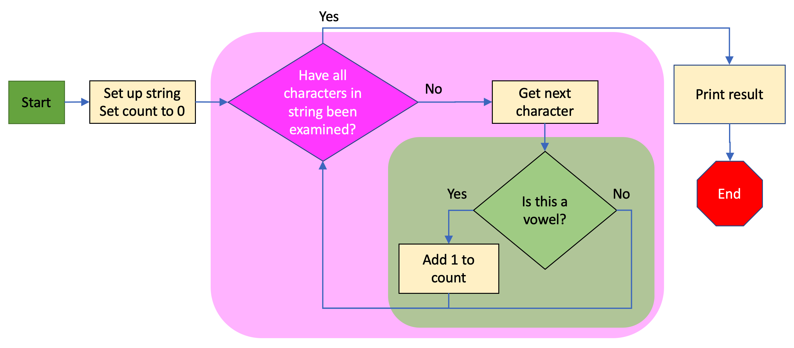
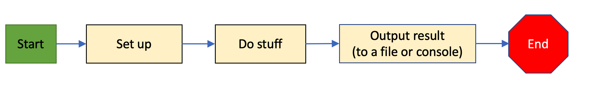
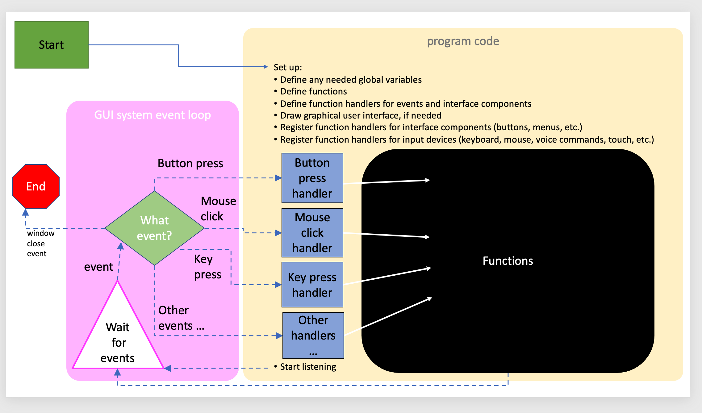

10.2. Program Architecture¶
When you start becoming a more serious programmer, you will hear people speak of system archtiectures or programming architectures. What this refers to is the way that a program is structured in code. What you have been doing so far has been programming what is commonly known as a batch program. In this chapter, we will highlight the difference between batch program architectures and the most common interactive program architecture: event-based.
10.2.1. Batch Programming¶
A batch program is very simple in its architecture: it starts, it runs sequentially through a set of code instructions, perhaps taking a few detours to code that is in functions, and perhaps making a few decisions based on data that is read in, random numbers or other information, and then it gets to the end and closes. The program below is an example of a very simple batch program:
This program takes some text, processes it using a for loop, prints out something to the console and then ends. A flow-chart that shows how this program is structured looks like this:
{kind=link}
This program doesn’t ever wait for the user to do anything. It runs very quickly, then finishes. You can start it and walk away, but because this program is so tiny, it will be finished before you can even get up from your chair. Some batch programs read in files or get data from some other source (like a sensor or an online database), and if there is a lot of data, they may take a long time to run. Scientists often run batch programs that will do things like process DNA samples, and sometimes they might start such a program one day and come back the next day to find the output written out in a file. You can think of batch programs as being like a dishwasher: you start them, they do their task and when they are done you have the result. You can walk away while they are running, you don’t need to stand there and wait for the dishwasher to finish, all you have to do is start it.
Here is a simplified, high-level, view of a batch program:
{kind=link}
10.2.2. Event-Based Programming¶
Most of the programs that people use day to day aren’t batch programs. They are interactive programs that respond to you - you start them, they do some setup and show you an interface and then they wait for you to do stuff and respond, and then they wait for you to do something else, etc. Using an interactive program can be kind of like a conversation: You do something, they respond, you do something else, they respond in a different way. Here is the overall architecture of an interactive, event-based program:
{kind=link}
You can see from the diagram above that event-based programs are more complicated. The stuff in the yellow box is what you, as a programmer creating an event-based program, have to write. The stuff inside the pink box is what the operating system (Mac, Windows, iOS, Android, etc.) takes care of for you. When the end user starts your program, a bunch of code is run to get things set up and to display a user interface. Some systems, such as an Alexa smart speaker, may not have a graphical user interface, but most do. Once everything is set up, the system just waits for the user to do something. Then, depending on what the user does, the handlers you have defined in your program get passed event information about what the user did, like what key they pressed on the keyboard, or where they clicked their mouse, or the fact that they chose a specific menu item, etc. The handlers you have defined for all these events likely call other functions in your program to do stuff. And in the meantime, the system continues to wait for other events from the user. This continues, with your program code being executed in response to all user events that are directed at your application. Note that if there are other applications running, and the user clicks in other windows and interacts with those other programs, the operating system is smart enough to direct those events to the code for those programs, so you only have to worry about what happens inside your program window, when it is active. This all comes to an end when the user closes your program window, or shuts down your application.